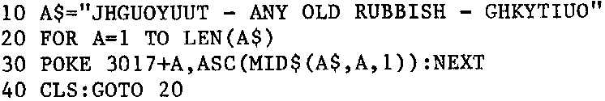

INMC 80 News |
February–April 1981 · Issue 3 |
| Page 45 of 55 |
|---|
We have often been asked what golfball we had on the old IBM. Sorry but we don’t know, it was 10 pitch and had M2 written on it.
Don’t forget to type ‘ENTER’ before going on to a new line.
In INMC 7 we talked about the IEI IEO daisy chain priority. We mentioned that the N2 board could be made either high or low in the chain by its position on the buss relative to the I/O devices. If highest priority is not required, then the 10K resistor, R40 should be removed.
The BAI and BAO lines are never likely to be used in the Nascom, but they are intended to give priority to devices which use DMA (direct memory access to take over the buss from the Z80). The daisy chain works in the same way as the I/O daisy chain, using a DMA controller chip.
It seems we’ve never mentioned the ‘A$’ problem at 4MHz on an N2 except in the Basic Progs Book. Run this program:
If it runs, then Ok. If after the computer has had time to warm up you get:
?FC Error in 30
then you’ve got it. Another symptom is that ZEAP will convert opcode 2A into 21 so you get this:
21780C LD HL,(0C78H)
as a final touch it will drive the Gemini/Henelec disk system mad (if it works at all). This all comes about because there is a nasty ‘skew’ on the 4MHz clock signal. It’s well and truly out of spec. Connect a 220R resistor between pins 6 and 14 of IC11. That helps but does an OoH-nasty to IC11. The laws of physics say that IC11 must fail sometime, but it took the shop demo machine !! months to die, and thats on 9 hours a day 6 days a week. For the 42p the 74LS14 cost it was a small price to pay. There are much more elegant cures, but they are messy and complicated (unless, of course, someone somewhere has cracked it).
Lots of confusion is caused when adding EPROMs to the N2 board. Blocks A and B never seem to stay still, and are guaranteed to be wrong whatever you do. Now this is a knotty one, and difficult to explain. It all concerns the way IC46 works. The simplest way to think of it is that the blocks change over at each 4K boundary, A becomes B, B becomes A. This gets even more fraught when non consecutive 4K blocks are addressed. Perhaps you should do what I do. Write a small machine code program that continally reads the start address I want, and use a scope to see which (if any) of the chip enables (pin 20) is waggling up and down. We’ll deal with this one with a proper article when we can find someone rash enough to write it.
Following our comments in the last issue re. competitive disk systems for the Nascom, the following figures have been brought to our attention:
| SYSTEM | APPROX. SALES | |
|---|---|---|
| Airamco System | 0 | (Product never taken into production) |
| Comp Disk System | 30 | |
| Gemini G805 | 200 | (Uses ‘Henelec’ controller card) |
| ‘Henelec’ card (kit) | 50 |
| Page 45 of 55 |
|---|